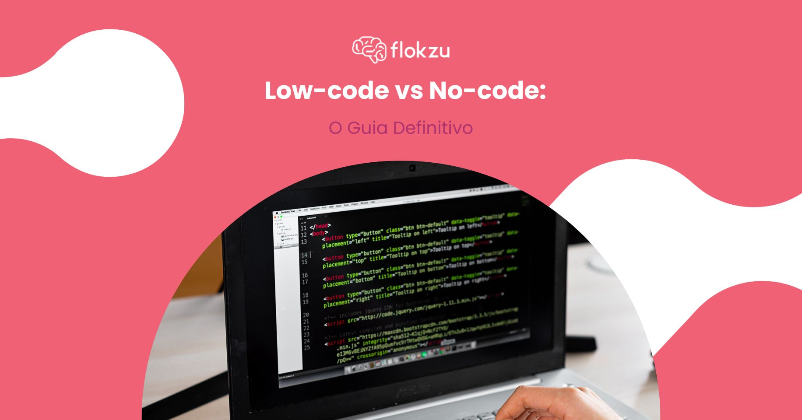

O Futuro da Programação: Tendências e Tecnologias Emergentes

A programação, como a conhecemos, está em constante evolução. À medida que novas tecnologias e paradigmas emergem, a maneira como desenvolvemos software e aplicamos soluções está mudando rapidamente. Neste artigo, exploraremos algumas das principais tendências e tecnologias que estão moldando o futuro da programação.
1. Inteligência Artificial e Machine Learning

A Inteligência Artificial (IA) e o Machine Learning (ML) estão transformando a programação de várias maneiras. Ferramentas e frameworks baseados em IA estão ajudando os desenvolvedores a escrever código mais eficiente e a automatizar tarefas repetitivas. Além disso, a IA está sendo utilizada para criar sistemas que podem aprender e melhorar com o tempo, oferecendo soluções mais personalizadas e eficazes.
2. Computação Quântica

Embora ainda esteja em seus estágios iniciais, a computação quântica promete revolucionar a forma como resolvemos problemas complexos. Com a capacidade de processar informações a uma velocidade exponencialmente maior do que os computadores tradicionais, a computação quântica pode abrir novas possibilidades em áreas como criptografia, otimização e simulação de sistemas complexos. Programadores precisarão se adaptar a novas linguagens e conceitos para tirar proveito dessa tecnologia emergente.
3. Desenvolvimento de Software com Baixo Código (Low-Code) e Sem Código (No-Code)
Plataformas de desenvolvimento de baixo código e sem código estão democratizando a criação de software, permitindo que pessoas sem formação técnica criem aplicativos e soluções personalizadas. Essas ferramentas estão facilitando o desenvolvimento rápido e a prototipagem, reduzindo o tempo necessário para colocar uma ideia no mercado. No entanto, ainda há desafios em termos de flexibilidade e escalidade, que os desenvolvedores tradicionais devem considerar ao adotar essas plataformas..
Veja Tambem
O que é Inteligencia ArtificialA Revolução da Telemedicina
Akon-Lonely